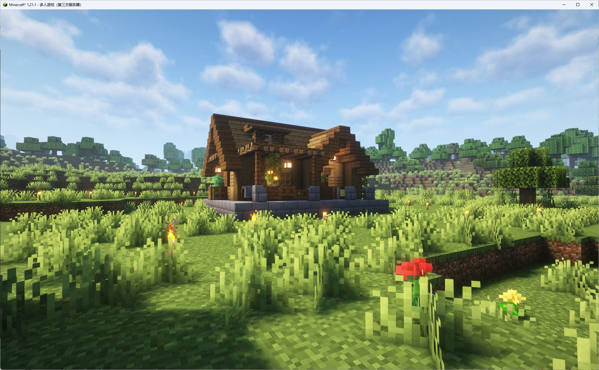
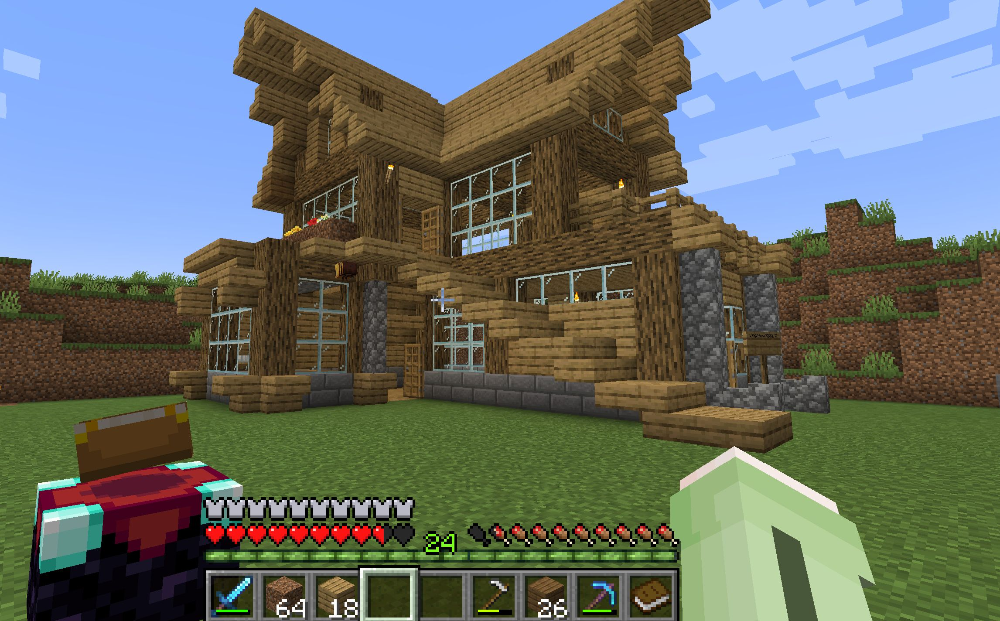
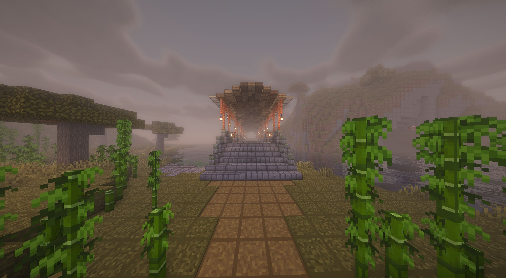
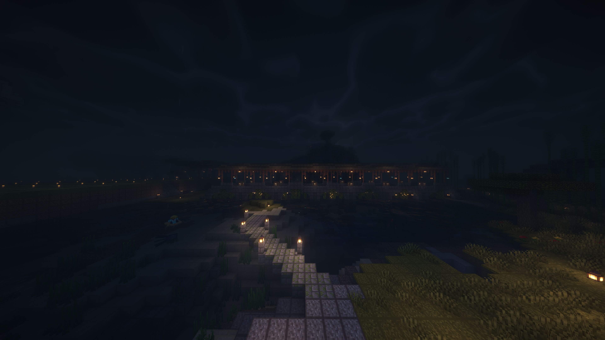
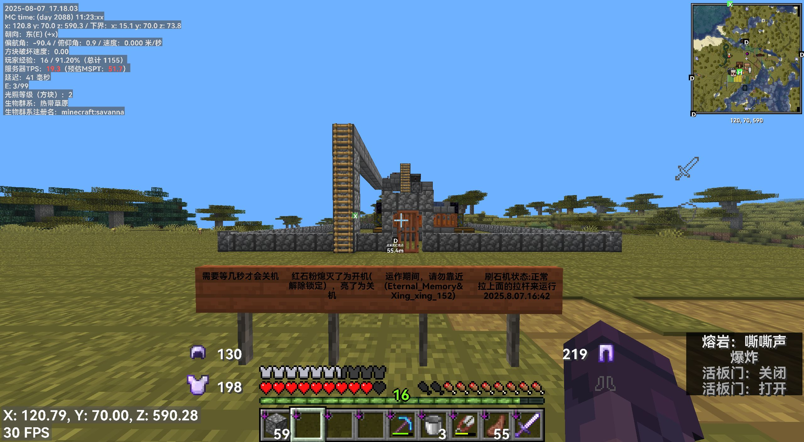
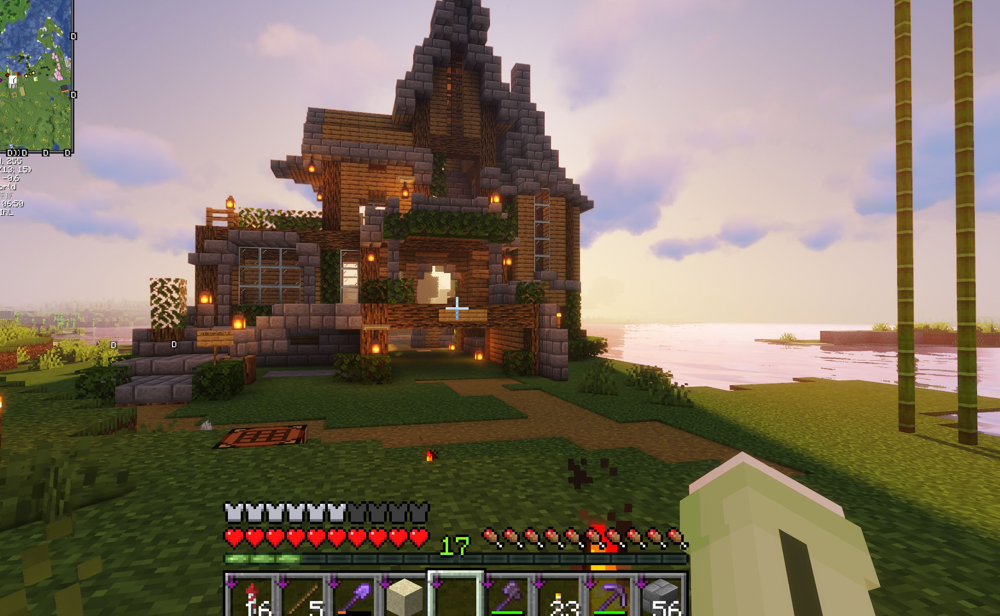
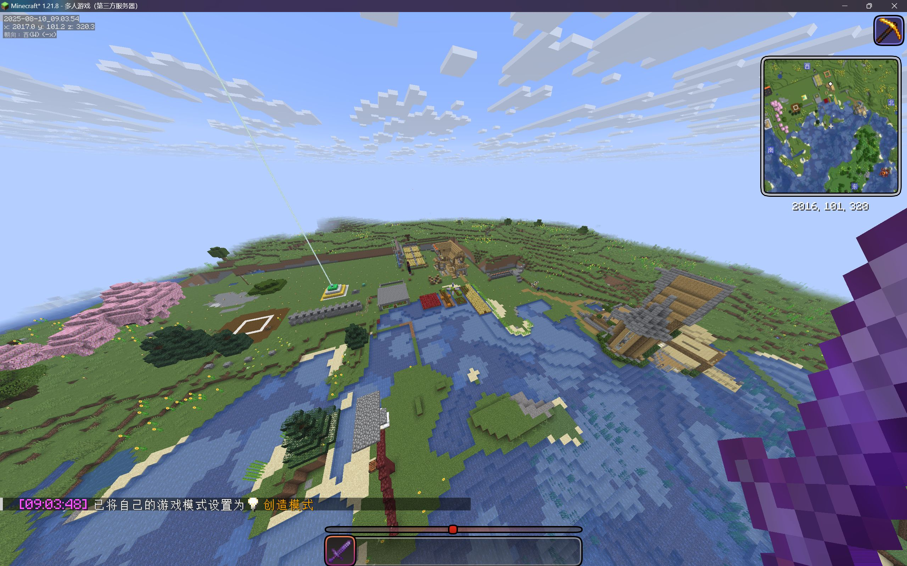
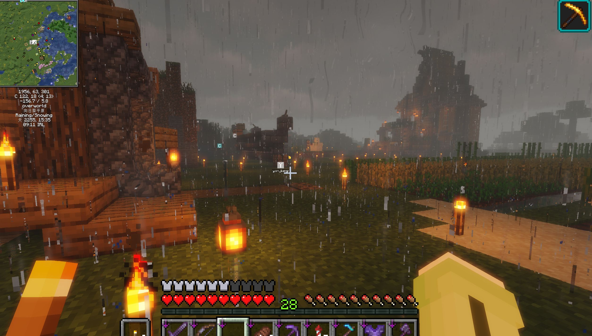

哲风壁纸
免费4K高清壁纸-电脑背景图片-Mac壁纸网站
访问网站MyFreeMP3
歌曲免费下载
访问网站白描网页版
图片文字提取
访问网站Amicora World是一个友好、和谐的我的世界服务器社区
服务器名字读作阿米科拉
当前玩家: 0/100
/help - 查看帮助/spawn - 返回出生点/sethome [地点名] - 设置传送点/spawn - 返回出生点/home [地点名] - 回家/back - 回到死亡点/tpa [玩家名] - 请求传送到其他玩家/tpahere [玩家名] - 请求其他玩家传送到此处/tpa - 请求传送到其他玩家/tell [玩家名] [内容] - 私信/report [玩家名] [原因] - 举报玩家







我们的服务器拥有许多玩家建造的精美景观，欢迎探索！
加入我们的服务器非常简单，只需几步：

添加白名单插件，后通过问卷添加用户白名单,问卷(3个问题):1.你的账号为正版账号还是LittleSkin账号(离线账号无法进入服务器，无正版账号请使用LittleSkin账号登入)2.你的游戏内名字为？3.你的QQ号为？
一个基于Tape Futurism的交互式小说，展示未来科技的可能性
访问扩展页一个基于未来科技的科幻小说，展示了科技的未来可能性
访问扩展页一个简单的ID卡，用于展示基本的个人信息
访问扩展页
玩家评论(不可用)
Eternal_Memory
NaN小时前hello from Amicora World